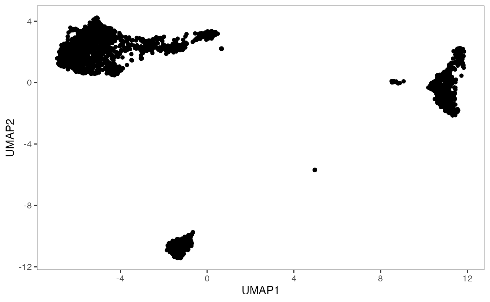

Introduction
Non-linear 2D embedding algorithms can be run through Single-Cell
Toolkit (SCTK) using both interactive shiny application and R console.
For the interactive analysis, the toolkit offers a streamlined workflow
to both compute the embedding and then visualize the results. For the
console analysis, SCTK offers a generic function
runDimReduce() to compute the 2D embedding.
Methods available with the toolkit include tSNE and UMAP from Seurat [[1]][2][[3]][4] package, tSNE from Rtsne [[5]][6] package and UMAP from scater [7] package.
To view detailed instructions on how to use these methods, please select “Interactive Analysis”, from the tabs below, for the usage in Shiny application or “Console Analysis” for using these methods in R console:
Workflow Guide
In general, the UI offers options for selection of data items and choice of parameters on the left side, and a visualization panel on the right side of the interface.
- To begin with, click on the “Feature Selection & Dimensionality Reduction” tab from the top menu. This workflow assumes that before proceeding towards computation of 2D embedding, data has been uploaded, filtered, normalized and dimension reduction has been performed through the preceding tabs.

- Select “Embedding” sub-tab:

- Select an input matrix to use with the tSNE or UMAP algorithm. A dimension reduction is recommended and can be obtained from Dimension Reduction tab.
- Select a specific tSNE or UMAP method for computation. Available methods include tSNE and UMAP from Seurat package, tSNE from Rtsne package and UMAP from scater package.
- Specify a name for the output embedding.
- (Optional) If selected input in step 3. is an feature expression matrix, users can specify preprocessing here before the embedding is computed. HVG list refers to a feature subset which could be obtained in Feature Selection tab. Preprocessing is only available for scater UMAP and Rtsne tSNE methods.
- Number of top dimensions (components) to use from the input dimension reduction (or the PCA generated with preprocessing specified by step 6.). Methods for determining this number have been provided in Dimension Reduction tab. And we recommend using the same number for the dimension reduction used for clustering, in order to get the best visualization of the clustering result.
- Embedding method specific parameters. These vary when different methods are selected in step 3.
- Set the seed of randomized computation process. A fixed seed generates reproducible result each run.
- Start computation of selected method with the specified parameters.
- Once computation is complete, a scatter plot of the cells on the selected 2D embedding is shown in the panel with additional options available in step 12.

- Users can select another computed embedding to visualize through dropdown box.

Here we show how to generate 2D embedding with the generic function
runDimReduce(), together with the method to visualize and
explore the results.
1. Compute 2D embedding
sce <- runDimReduce(inSCE = sce, method = "scaterUMAP", useReducedDim = "PCA", reducedDimName = "UMAP")The generic function runDimReduce() allows
"scaterUMAP" from scater, "rTSNE"
from Rtsne, "seuratUMAP" and
"seuratTSNE" from Seurat as options of 2D
embedding for method argument. For detailed parameter
description, please click on the function name to be redirected to its
reference page.
2. Visualization
There are multiple functions that can create scatter plot using
dimensions stored in reducedDims slot of the SCE
object.
# Make scatter plot without annotation
plotDimRed(sce, useReduction = "UMAP")
# Short-cut for embedding named as "UMAP"
plotUMAP(sce)
# Customizing scatter plot with more information from cell metadata (colData)
plotSCEDimReduceColData(sce, colorBy = "cluster", reducedDimName = "UMAP")
# Color scatter plot with feature expression
plotSCEDimReduceFeatures(sce, feature = "CD8A", reducedDimName = "UMAP")Example
library(singleCellTK)
sce <- importExampleData("pbmc3k")
sce <- runNormalization(sce, normalizationMethod = "LogNormalize", useAssay = "counts", outAssayName = "logcounts")
sce <- runFeatureSelection(sce, useAssay = "counts", method = "modelGeneVar")
sce <- setTopHVG(sce, method = "modelGeneVar", hvgNumber = 2000, featureSubsetName = "HVG")
sce <- runDimReduce(sce, method = "seuratPCA", useAssay = "logcounts",
scale = TRUE, useFeatureSubset = "HVG", reducedDimName = "PCA",
nComponents = 50)
# Run UMAP on the PCA reducedDim
sce <- runDimReduce(sce, method = "scaterUMAP", useReducedDim = "PCA",
reducedDimName = "UMAP")
# Plot UMAP
plotDimRed(sce, useReduction = "UMAP")
Individual Functions
While the runDimReduce() wrapper function can be used
for all 2D embedding algorithms including tSNE and UMAP, and
additionally for dimension reduction methods like PCA and ICA, separate
functions are also available for all of the included methods. The
following functions can be used for specific methods:
Running tSNE from Rtsne package:
sce <- runTSNE(inSCE = sce, useReducedDim = "PCA", reducedDimName = "TSNE")Using the Seurat tSNE wrapper is recommended only in the Seurat Curated Workflow.
sce <- runSeuratFindHVG(inSCE = sce, useAssay = "seuratNormData")
sce <- runSeuratPCA(inSCE = sce, useAssay = "seuratNormData", scale = TRUE, reducedDimName = "seuratPCA")
sce <- runSeuratTSNE(inSCE = sce, useReduction = "pca", reducedDimName = "seuratTSNE")Running UMAP from scater package:
sce <- runUMAP(inSCE = sce, useReducedDim = "PCA", initialDims = 25, reducedDimName = "UMAP")Using the Seurat UMAP wrapper is recommended only in the Seurat Curated Workflow.
sce <- runSeuratFindHVG(inSCE = sce, useAssay = "seuratNormData")
sce <- runSeuratPCA(inSCE = sce, useAssay = "seuratNormData", scale = TRUE, reducedDimName = "seuratPCA")
sce <- runSeuratUMAP(inSCE = sce, useReduction = "pca", reducedDimName = "seuratUMAP")